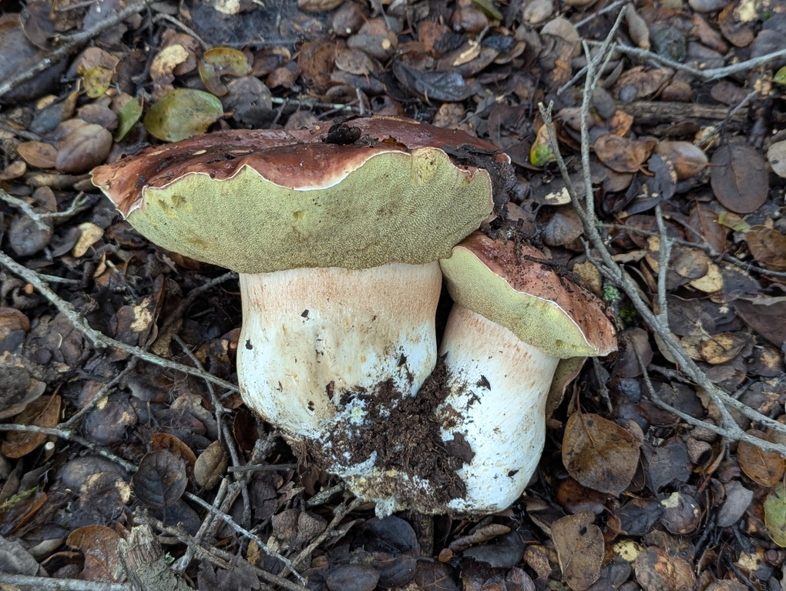
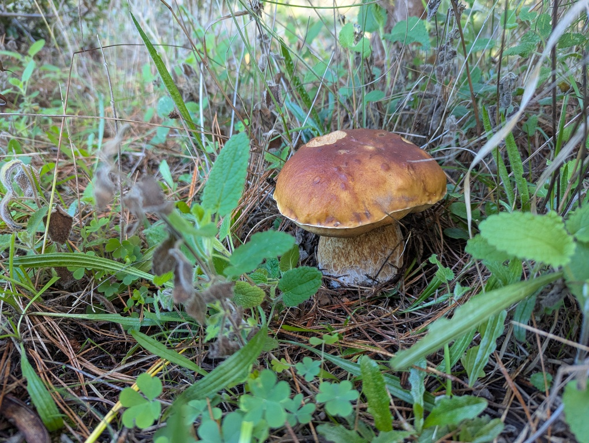
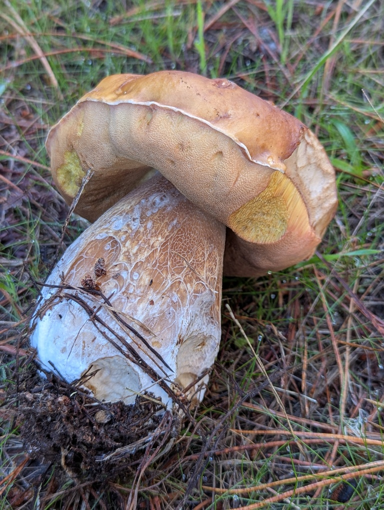
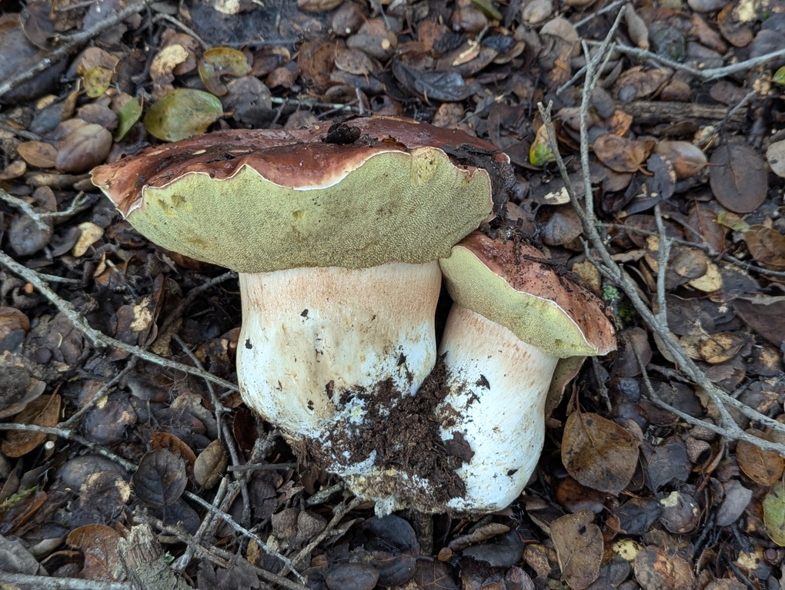
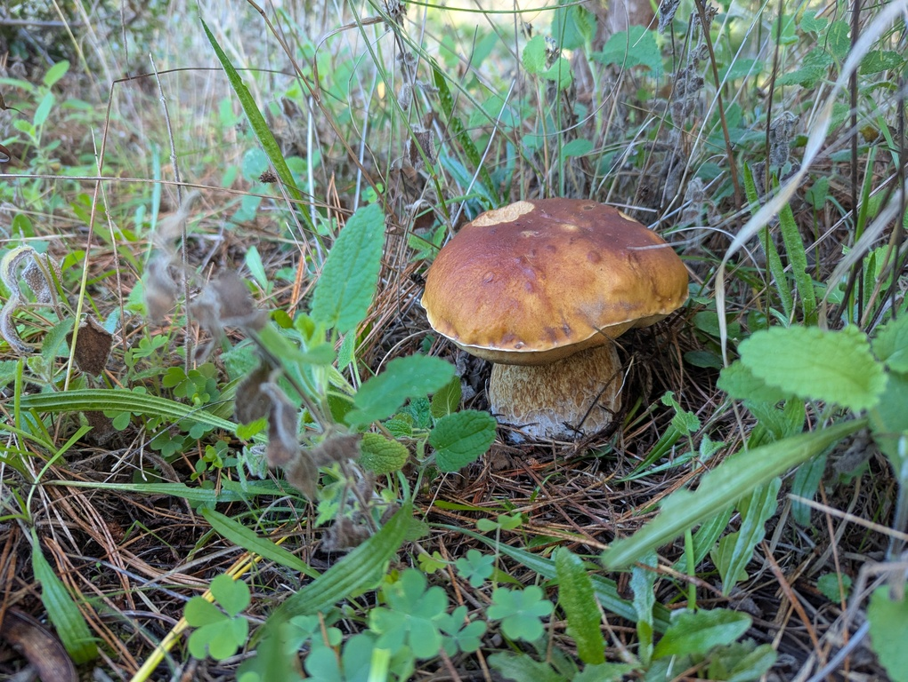
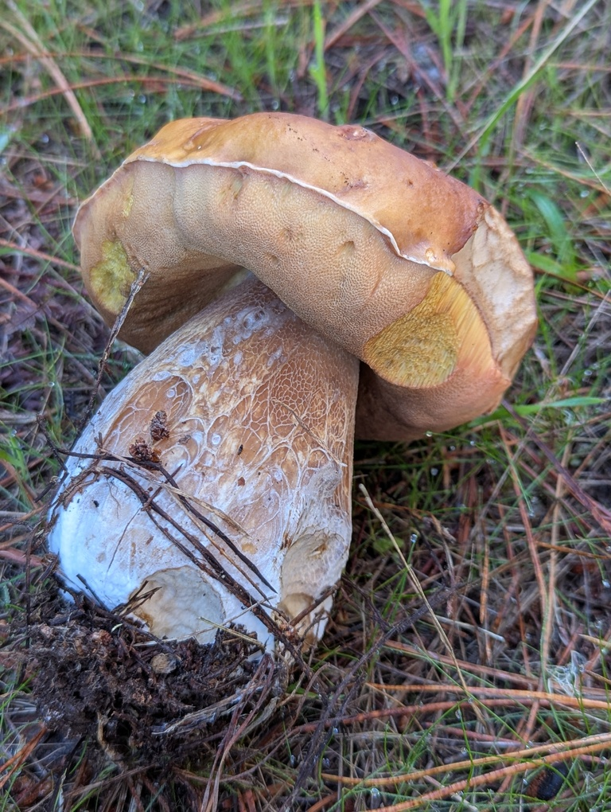

Boletus regineus
MykoWeb
This mushroom is similar to
B. edulis,
and it can be quite difficult to tell the two apart. This 'queen bolete'
has pores that tend to turn more yellow with age, and a darker cap when young.
It can be associated with hardwoods and other conifers, while B. edulis
in CA is associated with pines.
 




